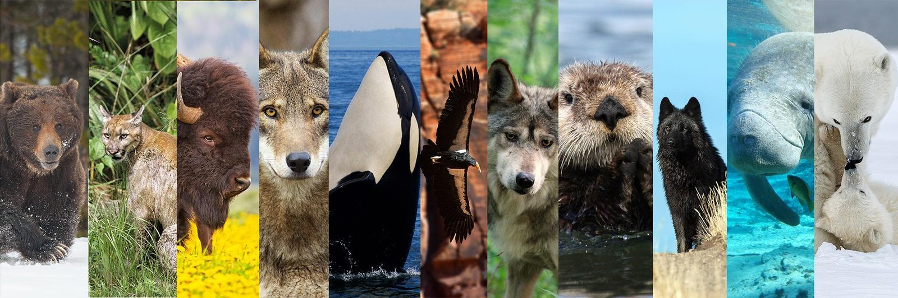

NEUR 411 Neuroethology

Neuroethology sits at the intersection of neuroscience, ethology, and evolutionary biology. It asks how nervous systems generate the behaviors that allow animals to find food, avoid predators, navigate across landscapes, and communicate with conspecifics, and how those neural solutions have been shaped by natural selection. NEUR 411 examines this question through a series of case studies, each centered on a single animal system: insect vision and hearing, the escape circuits of crayfish and fish, bat and owl sound localization, electroreception in sharks and weakly electric fish, magnetic and chemical navigation, songbird vocal learning, and primate communication. Within each case, we consider the behavior the animal must perform, the neural circuitry that performs it, and the experiments that established the mechanism.
Instructor
Jordan Lopez, M.D., Ph.D.
Professor of Psychology, Biological Sciences, Neurobiology & Biomedical Engineering
Office: Auditory Neuroscience Institute, Room ANI 208
Office Hours: Tuesdays and Thursdays 5 – 7 pm, Room ANI 208
Teaching assistants and the exam proctors are listed in the syllabus. Contact your TA first for lab, report and grading questions.
Course times and locations
| Component | Days & Times | Location |
|---|---|---|
| Lecture, Section 1 | Mon / Wed / Fri, 9:00 to 10:50 AM | NEU 500 |
| Lecture, Section 2 | Mon / Wed / Fri, 5:30 to 7:20 PM | NEU 500 |
| Laboratory | Lab Sections: Tue 11am – 1pm Tue 4pm – 6pm Wed 12pm – 2pm Thu 3pm – 5pm Fri 12pm – 2pm | NEU LAB5A NEU LAB5B NEU LAB5A NEU LAB5B NEU LAB5A |
| Exams (4 total) | Mondays at 12:00 PM (dates in Course Calendar) | NEU 100A or NEU 100B |
Course materials
- Lecture slides: all 40 lectures, grouped by exam.
- Course calendar: lectures, exams, labs, field experience and due dates.
- Recommended readings: the primary papers behind each lecture, with DOI links.
- Labs: lab schedule, report due dates, computational assignments and the reflection essay.
- Lecture project: the simulation or APA paper options and milestones.
- Field experience: the required Spring Recess trip, March 18 to 21.
- Special topics: additional lecture topics you can request to replace a scheduled lecture.
- Resources: software, library and study help, and USC policies and support services.
- Syllabus: grading, exams, policies; also as a PDF or Word document.
Grades and assignment submissions are handled in Brightspace. This site holds the course materials.
Coming up
See the course calendar for every lecture, exam and due date.